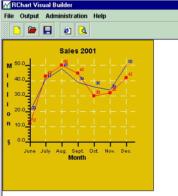
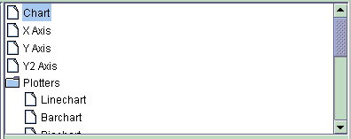
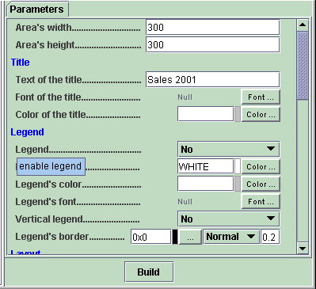
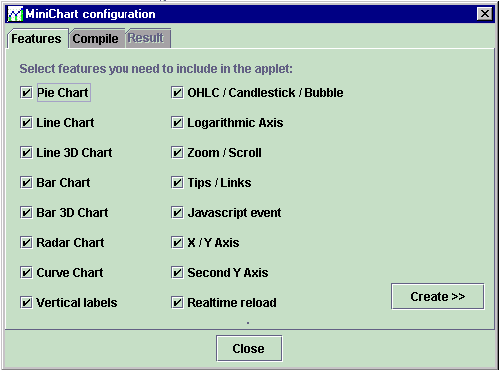

RChart Visual Builder 1.1
Introduction
What
is RChart Visual Builder
RChart Visual Builder is a tool for
creating charts to be used with RChart product. Therefore:
- it is optional. You don't have
to use RChart Visual Builder if you don't want to, you can still manually
create the parameters for Rchart.
- it is a tool for Rchart. You must
already have a license for the product RChart.
the benefits of using RChart
Visual Builder are:
- you don't have to write much Java[TM]
source code in order to create charts.
- you will not make any mistakes
when typing parameters, since you visually define the chart.
- you will have an overview of the
available parameters.
- you will easily and quickly test
changes in you chart design.
this will result in shorter
learning and development times of charts.
Requirements
In order to run RChart Visual Builder
you need the Java development kit 1.1 or later (1.2, 1.3 ...)
- Java development kit 1.1 or 1.2,
you must also install Swing (swingall.jar). If you don't have it you can dowload
it here: The Swing Connection.
- Java development kit 1.3 or later,
already contains the swing classes.
Note: Swing is needed it to run RChart
Visual Builder only, it is not needed for running RChart.
About
the evaluation version
If you are running the evaluation
version of RChart Visual Builder you must be aware of these limitations:
- a reminded will be displayed when
you start the application.
- you will not be able to save or
export your charts.
- you will only be able to see the
first 10 created parameters in the menu output->view.
Description
Installation
Unzip Rchart Visual Builder ZIP file
in the same directory where you have installed/unzipped Rchart. Remember that
RChart Visual Builder is an additional tool for RChart, so you must separately
download and install RChart.
Starting
RChart Visual Builder
In order to start the application
you must execute the following files:
- for Microsoft's Virtual Machine:
runRChartMS.bat
- for Sun's Virtual Machine: runRChartSUN.bat
Remember! if you use the Java[TM]
Development Kit 1.1 or 1.2 you need also Swing (swingall.jar)
User
Interface
The user interface is made of the
following sections:
- the chart area: left window.
This area will display the created chart.

- The components tree. This
tree displays the components of the chart.Each chart can have the following
components:
- the
chart: this component stores some general configuration, like
chart's title, background color...
- the axis:
each chart can have up to 3 axis, X, Y and Y2.
- the
plotters: each chart can have several plotters, depending on
the kind of chart you create: linechart (for 2D/3D lines, areas, candlestick
and curves), barchart (2D/3D bars) piechart (2D/3D pies) and radarchart.
- the
series. RChart Visual Builder supports up to 9 series (RChart
supports however 50). In order to activate each serie you must enter a name
in the "name" field. If this field is empty, the serie
will not be used. Each serie represents, a line (if type is line) or a serie
of bars (if type is chart).


- the menu. It allows the following
operations:
- File->New: creates
new chart, current parameters will be lost.
- File->Load: loads
new parameters, current parameters will be lost.
- File->Save: saves
current chart parameters into a file.
- File->Exit: exits
application.
- Output->View: view
current parameters. You can copy and paste these parameters to use them
in your ASP, JSP[TM]
or Php scripts.
- Output->Run on browser:
run the current chart as applet in a browser. This option will create
a file called chart_test.html and will open it using the defined
browser (see also administration menu).
- Output->Applet Parameters:
creates a file that contains the applet parameters for the current chart.
- Output->Servlet/Java
parameters: creates a file that contains the parameters for the current
chart to be used in a servlet or Java program (see section "running
the chart").
- Administration -> parameters'
names: if checked, the name of the parameters will be displayed instead
of the description.
- Administration -> set
browser: you must select the browser executable in your computer in
order to be able to view the help files or run the chart on the browser.
- Help -> RChart Visual
Builder: view this file.
- Help -> RChart Parameters:
view Help_English.html file.
- Help -> RChart JavaDoc:
view JavaDoc[TM] files.
- Help -> About: displays
version.
Limitations
When you build your chart using the
Visual Builder you must take into account that the following features are not
activated inside the Builder:
- Zoom and scroll.
- Tips.
- Html links and Javascript.
- Realtime features.
in order to test this features you
must use the "Output->Run on browser" option, because these
features are only available when RChart is running as applet.
Running
the chart
Once your chart has been created
you can:
- view the parameters (menu->output->view).
You can copy and paste the parameters to use them in your ASP,
JSP[TM] or Php scripts.
- save the parameters to use them
in your servlet: menu->output->Servlet /Java parameters . Read
also this to learn how to setup a servlet.
- save the parameters to use them
as applet: menu->output-> Applet parameters. After that use a
browser to open the file.
- save the parameters to use them
in a Java program (: menu->output->Servlet /Java parameters).
In this case you must use the following Java code:
// create chart
loader
chartLoader loader=new chartLoader(null);
// load paremeters
loader.loadFromFile("file://" + f[1]+f[0],true);
// create charts
Chart c=loader.build(false,false);
Note that some of the parameters
in your chart are constant, for example, your chart will always have a yellow
background color. However some other parameters will be variable, for example
the data to be plotted (parameter SERIE_DATA_*). You must of course change those
parameters at runtime:
- If you use a ASP,JSP[TM] or php
script, see examples of
scripts.
- If you use Java source code you
change the parameters:
// create chart loader
chartLoader loader=new chartLoader(null);
// load paremeters
loader.loadFromFile("file://" + f[1]+f[0],true);
//
change the parameters you what here, for example, provide new data to
be plotted
loader.setParameter("SERIE_DATA_1","1|34|54")
// create charts
Chart c=loader.build(false,false);
- If you use Java source code you
also change the chart once has been created (see RChart Javadoc[TM]):
// create chart
loader
chartLoader loader=new chartLoader(null);
// load paremeters
loader.loadFromFile("file://" + f[1]+f[0],true);
// create charts
Chart c=loader.build(false,false);
//
change first serie in plotter 0
c.plotters[0].replaceSerie(0,yourDataSerie);
MiniChart
configuration
Introduction
We have introduced
MiniChart in order to speed
up the download process of RChart when running as Applet.
This is a tool that will minimize the size of the applet. This is achieved by
recompiling the source code of RChart and including only those features you
are going to use. For this reason miniChart can only be used if you
have purchased the source code of RChart.
By means of MiniChart you can achieve
applets as small as 32K (for
a pie or radar chart), the final size will depend on how many features
you require and the Java development kit version you use. The size of minichart
for line or bar charts range from 40k to 50k.

Installation
Before you run minichart you must
:
- Install Sun's Java[TM] Development
Kit, you can download it at http://www.java.sun.com.
This will install the Java compiler minichart will use to compile you applet.
- copy all source code files (*.java
files) to the following directory:
DIR/com/java4less/rchart
, DIR is the directory
where you have installed RChart Visual Buidler.
Create your
own applet
Follow these steps in order to create
your miniChart applet:
- Start miniChart from the menu:
administration -> minichart.
- deselect all features you will
not need.
- click on "Create", this
will modify the source code and will copy the modified files to DIR/tmp/com/java4less/rchart
- select directory where you installed
the Java development kit (for example c:\jdk1.4) so that minichart is able
to recompile the source code. The compiler command will be modified to include
the correct directory.
- enter the applet file name (default
is minichart.jar)
- click on compile.
- you will be able to see the result
of the compilation in the result window.
How to use
the applet (miniChart.jar)
Once you have created you own applet
you will be able to use ir in your HTML pages adding the following parameter
to the <APPLET> tag:
ARCHIVE=miniChart.jar
a complete example would look like
this:
<APPLET
CODEBASE = "."
ARCHIVE=miniChart.jar
CODE = "com.java4less.rchart.ChartApplet.class"
NAME = "TestApplet"
WIDTH = 500
HEIGHT = 500
HSPACE = 0
VSPACE = 0
ALIGN = middle
MAYSCRIPT
>
Tutorial
Create
a line or bar chart, step by step
The following steps will show you
how to create a line chart that uses dates in the x axis:
- Start RChart Visual Builder
- Create a new chart with menu File->New.
- Click on the Chart node
of the components tree (top right corner of the window).
- Enter desired size of the chart
in the Area's width and height parameters. For example 400,400.
- Enter a title for you chart in
the "Text of the title" field. For example "My first
chart".
- Proceed now with the X Axis
- Click on the X Axis node
of the components tree.
- Enter title for the X Axis in
the "Text of the X label". For example "Date".
- Enter initial date "X initial
date" , for example "23-12-2001".
- Enter "d" in the "X
date step". In this way, each tick will stand for 1 day.
- Enter 7 in the "X big tick
interval" so that you get 1 big tick every 7 days.
- Proceed now with the YAxis
- Click on the Y Axis node
of the components tree.
- Enter 0 in the "Y Min"
field.
- Enter "10" in the "Y
auto ticks" so that you get only 10 ticks on the Y axis.
- Set "Y axis integer"
to "Yes", in order to avoid decimal values on the Y Axis labels.
- Proceed now with the Data to
be plotted
- Click on the Serie 1 node
of the components tree
- Enter a name for the serie in
the field "Name of the serie". For example "Sales".
- Enter the values to be plotted
in the "Data" field. For example: "10|23|45|24|45|67|86|23|43"
.
- Set Type to LINE in order
to get a line chart or BAR in order to get a bar chart.
- Select now color of the line in
the field:
- click on the Build button.
congratulations!, you have created
your first chart, you can now change some other parameters like colors, images,
line styles or fonts in order to make this simple chart look a bit nicer.
Create
a pie chart, step by step
The following steps will show you
how to create a pie chart:
- Start RChart Visual Builder
- Create a new chart with menu File->New.
- Click on the Chart node
of the components tree (top right corner of the window).
- Enter desired size of the chart
in the Area's width and height parameters. For example 400,400.
- Enter a title for you chart in
the "Text of the title" field. For example "My first
chart".
- Proceed now with the Data to
be plotted
- Click on the Serie 1 node
of the components tree.
- Enter a name for the serie in
the field "Name of the serie". For example "Test".
- Set Type to PIE.
- Set now the values in the "Data"
field, for example "10|45|67". This will be the values for each
item of the pie.
- Enter now the names of the items.
- Enter the name in the "Item
name 1" field of the "PieChart" section of the "Serie
1", for example "Item A".
- Enter the name in the "Item
name 2" field of the "PieChart" section of the "Serie
2", for example "Item B".
- Enter the name in the "Item
name 3" field of the "PieChart" section of the "Serie
3", for example "Item C".
- Enter now the colors for the items
of the pie.
- Select a color in the "Item
style 1" field of the "PieChart" section of the "Serie
1"
- Select a color in the "Item
style 2" field of the "PieChart" section of the "Serie
2"
- Select a color in the "Item
style 3" field of the "PieChart" section of the "Serie
3"
- click on the Build button.
congratulations!, you have created
your first chart, you can now change some other parameters; Click on the "Piechart"
node of the components tree to change the aspect of the pie.
Examples
The subdirectory "Examples"
contains several files you can load into RChart Visual Builder. We recommend
you to use this examples as start point for your own charts.
Links
and contact
- Faqs: some answers to common
questions are to be found here: Faqs.
- Registration: if you are
using a evaluation version of this product you can registrate here: RChart
home page
- Updates: if you are entitled
to get free updates (see license agreement) you can check for new versions
here: RChart home page
- other: you can also contact
us at java4less@confluencia.net.
Java,
JSP, JDBC, JDK and all Java-based marks are trademarks or registered trademarks
of Sun Microsystems, Inc. in the U.S. and other countries. J4L Components
is independent of Sun Microsystems, Inc.